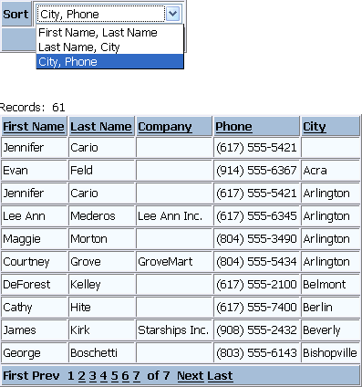

Sorting a Grid on Multiple Fields
The default behavior of a grid component allows the user to sort on any column (or row) value by clicking the column (or row) header. What do you do when you want to sort on multiple fields? This example demonstrates a technique.
This page contains two components: a dialog with a drop down list box and a grid displaying fields from the AlphaSports sample database.

The drop down list box (named "Sort") on the dialog component contains a static list of choices ( Controls > Sort > DropDownBox Properties > Choices ).
First Name, Last Name Last Name, City City, Phone |
Creating a session variable is a 2 step process. The AfterValidate event ( Properties > Server Events > After Validate ) of the dialog contains the following code. This section of the code is step 1 of the process. It allows the session.multifield_sort variable to be created by assigning it a value. Step 2 occurs after the user clicks the Submit button on the page and the dialog code executes without error.
if eval_valid("CurrentForm.Controls.Sort") if .not. eval_valid("session.multifield_sort") then
session.multifield_sort = "" end if |
Next, the script scans through the same values that were stored in the drop down list box and sets session.multifield_sort to a valid order expression. Here, you have to use real field names.
|
if CurrentForm.Controls.Sort = "First Name, Last Name" then
session.multifield_sort = "firstname + lastname" end if if CurrentForm.Controls.Sort = "Last Name, City" then
session.multifield_sort = "lastname + bill_city" end if if CurrentForm.Controls.Sort = "City, Phone" then
session.multifield_sort = "bill_city + phone" end if end if |
Place the dialog and grid components on the page. In the Source tab of the HTML Editor make sure that the dialog component code is before the grid component code in the page <head>. This is different from the placement of the components as visible in the WYSIWYG tab. Here you are looking at code that is in the <body> of the page.
The alias of the grid component is "Customer_sort". This is the default condition the grid component's override section in the page <head>.
with tmpl_Customer_sort componentName = "Customer_sort" end with |
This modification checks to see if session.multifield_sort exists. If it does exist, the script assigns the variable's value to the grid's dbf.order property. When the page returns from the server the grid will display the new sort order.
with tmpl_Customer_sort componentName = "Customer_sort" if eval_valid("session.multifield_sort") then
dbf.order = session.multifield_sort end if end with |
See Also